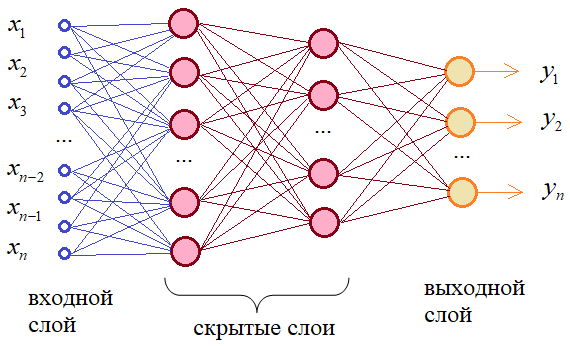
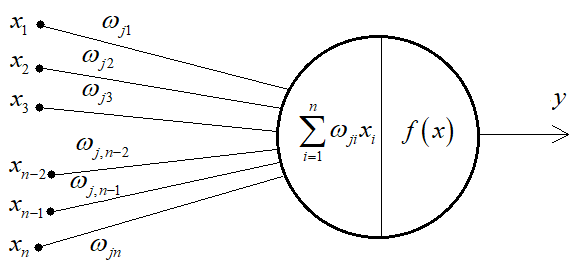
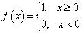
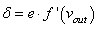

Простейшая НС – персептрон, представляет собой упрощенное
отражение работы биологической сети, состоящей из нейронов,
соединенных между собой дендридами и аксонами:

Простейшая модель Перцептрона
Это классический пример полносвязной сети прямого распространения.
Здесь каждый нейрон предыдущего слоя связан с каждым нейроном следующего слоя.
А сигнал распространяется от входного слоя к выходному,
не образуя обратных связей.
Каждая связь между нейронами имеет определенный вес и, сигнал, проходя по ней,
меняет свое значение в соответствии с этим весом:

Устройство нейрона
Сам по себе нейрон – это сумматор входных сигналов, который, затем, пропускает
сумму через функцию , называемую функцией активации.
Выходное значение этой функции и есть выходное значение нейрона.

Пример функции активации
В относительно маленьких нейронный сетях можно подобрать веса связей вручную
Но при увеличении числа нейронов и связей, ручной подбор становится попросту
невозможным и возникает задача нахождения весовых коэффициентов связей нейросетей.
Этот процесс называют обучением нейронной сети.
Самым популярным подходом к обучением нейросетей является алгоритм обратного
распространения ошибки (англ. Back propagation), который в свою очередь базируется на методе градиентного спуска.
Один из распространенных подходов к обучению заключается в последовательном предъявлении НС
векторов наблюдений и последующей корректировки весовых коэффициентов так,
чтобы выходное значение совпадало с требуемым:
Это называется обучение с учителем, так как для каждого вектора
мы знаем нужный ответ и именно его требуем от нашей НС.
Градиент - это вектор, указывающий направление и скорость изменения функции.
Градиент вычсляется по следующей функции:

Где "e" - ошибка нейросети (ожидаемый ответ - полученный ответ),
а "f'(v
out)" - производная функции в точке полученного вывода нейросети.
Посчитав локальный градиент, мы можем найти необходимое изменение весов связей